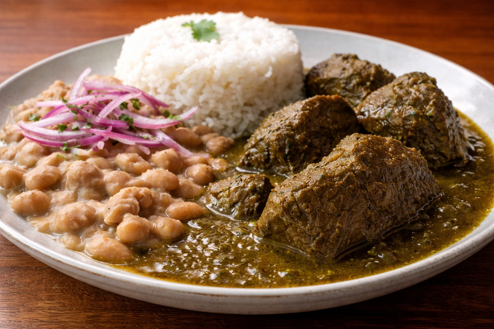

Whole Foods Recipes: Seco de Res with Rice and Beans
Last updated: March 20, 2026

A whole-food version of Peruvian seco de res served with white rice and beans. This version is built around beef, cilantro, garlic, onion, and simple real ingredients that create strong flavor without processed shortcuts.
- Seco de res is a full plate: the beef, rice, and beans work together as one meal.
- Flavor depends on balance: cilantro, garlic, and salt must be strong enough to support the dish.
- Low and slow is required: 2 to 2½ hours produces consistent tender beef.
- Control the liquid: too much water weakens the sauce, reduction at the end improves it.
Purpose
Seco de res is one of the best examples of how real cooking creates deep flavor from simple ingredients. It is hearty, savory, and satisfying, especially when served with white rice and beans. This version keeps the dish practical and ingredient-focused while still feeling complete and traditional.
Ingredients
For the seco de res
- 2 lbs beef chuck or stew meat, cut into large chunks
- 1 bunch cilantro
- 4 cloves garlic
- 1 medium yellow onion
- 1 tbsp ají amarillo paste (optional)
- 1 tbsp ají panca paste (optional)
- 1½ to 2 cups beef stock or water
- 2 tbsp avocado oil or olive oil
- Salt to taste
- Black pepper to taste
- 1 tsp cumin
For the rice
- 1 cup white rice
- 2 cups water
- Pinch of salt
For the beans
- 2 cups cooked beans, such as canary beans or pinto beans
- 1 to 2 tbsp bean cooking liquid or water if needed
- Salt to taste
Optional finish
- Thin sliced red onion
- Fresh cilantro
Equipment
- Large pot or Dutch oven
- Blender or food processor
- Rice pot or saucepan
- Knife and cutting board
Preparation
Cut the beef into large chunks and season lightly with salt, pepper, and cumin. Trim excess fat where needed, since this dish benefits more from soft braising than from rich fatty pockets. Roughly chop the onion and gather the cilantro and garlic for the blended sauce base. If the beans are already cooked, keep them ready in a separate pot so they can be warmed during the final stage.
Method
- Heat the oil in a large pot over medium-high heat.
- Sear the beef in batches until browned on multiple sides. Remove and set aside.
- Blend the cilantro, garlic, onion, and optional ají pastes with a little stock or water until smooth.
- Lower the heat to medium and add the green base to the same pot. Cook for a few minutes until fragrant and slightly thickened. This removes the raw taste and builds depth.
- Return the beef to the pot and add a controlled amount of stock or water. Start with less liquid than expected, as more can always be added later.
- Cover and cook on low heat for 2 to 2½ hours until the beef is consistently tender. Stir occasionally and check liquid levels.
- While the beef cooks, prepare the rice by simmering it with water and salt until done.
- Warm the cooked beans separately, adding a little bean liquid or water if needed.
- Near the end, uncover and allow the sauce to reduce if it is too watery. The goal is a sauce that coats the beef, not a soup.
- Taste and adjust salt at the end. This step is critical, especially for larger batches.
- Serve the beef with sauce, white rice, and beans on the same plate. Add sliced red onion or cilantro if desired.
Total time
- Prep time: about 20 minutes
- Cook time: about 2 to 2½ hours
- Total: about 2¼ to 3 hours
Why rice and beans belong here
Rice and beans are not just accessories. They complete the plate. The rice gives the sauce somewhere to land, while the beans add softness and depth. Together, they turn seco de res into a more balanced and recognizable Peruvian meal.
Upgrade: Restaurant-style beans (from a can)
Canned beans can be significantly improved with a few simple steps. Instead of serving them directly, treat them as an ingredient.
- Drain and rinse the beans to remove excess sodium and canned flavor.
- Heat a small amount of olive oil and lightly sauté garlic.
- Add the beans with a small amount of water or bean liquid.
- Simmer for 5 to 10 minutes.
- Lightly mash 20–30% of the beans to create a creamier texture.
- Season with salt and a small pinch of cumin if desired.
- Finish with a small drizzle of olive oil for a smoother texture.
This simple upgrade turns basic canned beans into something much closer to a restaurant-quality side.
Finish
Serve hot with sauce spooned over the beef. Keep the rice distinct enough to hold its shape, and place the beans alongside the sauce rather than hiding them underneath. A little sliced red onion adds freshness and contrast.
Notes (v2 tested)
- Batch size matters: larger amounts of meat require more time and careful liquid control.
- Trim excess fat: too much fat can affect texture since this is a slow-cooked dish, not fried.
- Consistency of cuts: similar-sized pieces cook more evenly.
- Salt timing: always adjust salt near the end, especially for larger batches.
- Cilantro level: slightly more cilantro improves overall flavor balance.
- Sauce control: avoid adding too much water early; reduce at the end if needed.
- Beans improvement: simmering slightly longer creates a softer, creamier texture.
- Rice timing: cooking rice earlier and letting it rest helps avoid excess moisture.
- Leftovers: seco often tastes better the next day after flavors settle.
Personal note
This version comes from real execution, not theory. The first run showed that flavor was already strong, but consistency, salt, and liquid control make the difference between a good home version and a restaurant-level result.
Seco de res is not complicated, but it requires patience and attention to detail. Once those are in place, it becomes a reliable and repeatable dish that fits naturally into a whole-food cooking system.
Next steps
Continue with more Whole Food Cooking.
This article focuses on general food quality and cooking with quality ingredients, not medical advice.